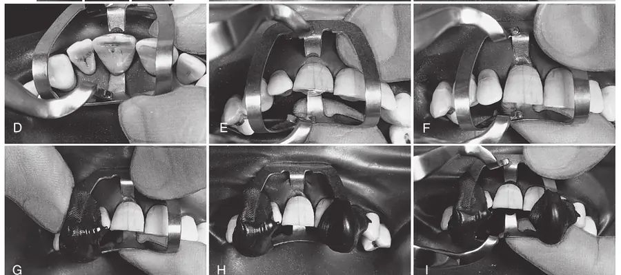
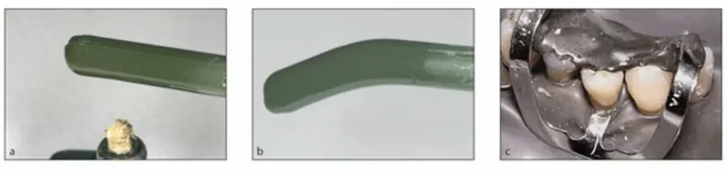

نسخه استخراجشده؛ ترجمه یا تأیید علمی انجام نشده است. وضعیت: captured
برای ضایعهی کلاس V کانین پایین، دانشجو کلمپ 212 را باز کرد و هر دو فک را همزمان روی دندان فشار داد. فک فاسیال درست روی لبهی ضایعه نشست، مینای ضعیف لبه شکست و ورق هنوز روی لثه بود. ترتیب درست چیست؟

کلمپ را با دست غیرغالب هدایت کن: انگشت اشاره زیر کمان لینگوال، شست زیر کمان فاسیال.
کلمپ 212 دو کمان دارد و نقطههای هر فکش به هم نزدیکاند؛ برای همین روی دندان مزیودیستالی لق میزند و اگر تثبیت نشود به ریشه آسیب میزند. پس اغلب باید آن را با مادهی سفت و سریعگیر ثابت کنی: کامپاند (قرمز یا سبز) یا مادهی ثبت بایت از جنس PVS.

کلمپ را با فورسپس بگیر و فکها را کاملاً باز کن تا از کامپاند جدا شوند؛ بعد رو به انسیزال بالا ببر تا دندان و ترمیم تازه خراش برندارند. اگر کامپاند سوراخهای لینگوال را پوشانده، سوراخ فاسیال را با پلاستیک اینسترومنت بگیر و فک فاسیال را اول رو به فاسیال و بعد رو به انسیزال بکش.
نکتهی طلایی: پیش از برداشتن ورق، امبرژرها را از تکههای کامپاند یا PVS پاک کن.